Invoice Cove funguje celé vo vašom zariadení: faktúry, ponuky, zákazníci aj profil vašej firmy sa ukladajú lokálne, nie na žiadny server Invoice Cove. Nezhromažďujeme, nevidíme ani neprijímame žiadne údaje o vašich faktúrach ani o tom, ako aplikáciu používate. Žiadna analytika, žiadne sledovanie, nič sa na pozadí nikam neodosiela. Jediný okamih, keď samotná aplikácia potrebuje internet, je spracovanie jednorazového nákupu Invoice Cove Pro cez Google Play. Podrobnosti nájdete v Zásadách ochrany osobných údajov.
Obsah
1 Úvodná obrazovka
Úvodná obrazovka je váš východiskový bod, s dlaždicou pre každú hlavnú akciu: Nová ponuka, Ponuky, Nová faktúra, Faktúry, Nový zákazník, Zákazníci, Kalendár a Prehľady. Klepnutím na dlaždicu sa tam hneď dostanete.
Lišta dole vám ponúka rýchly prístup k Domov, Nová (nová faktúra), Faktúry, Zákazníci a Prehľady.
Ikona ozubeného kolieska (⚙️) v pravom hornom rohu väčšiny obrazoviek otvára Údaje o firme a nastavenia.
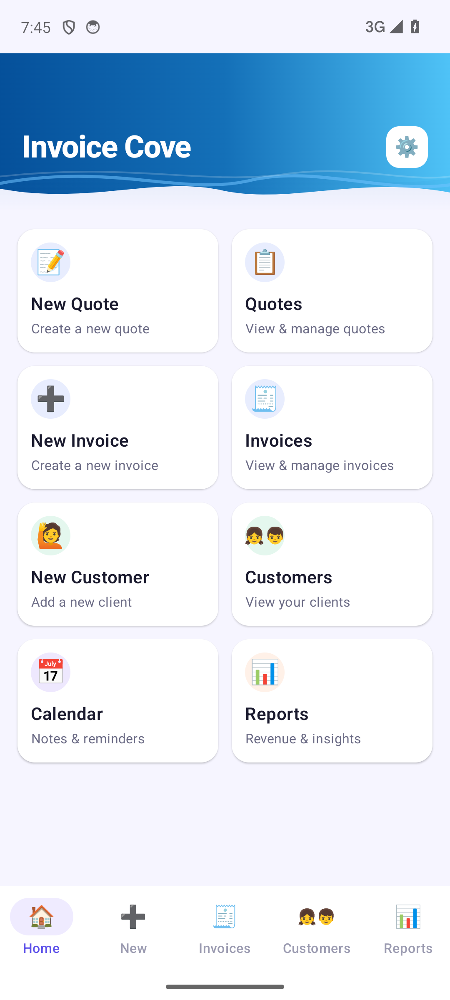
2 Zákazníci
Ak chcete pridať zákazníka, prejdite na kartu Zákazníci a klepnite na ikonu +, alebo použite dlaždicu Nový zákazník. Zákazníka môžete pridať aj pri vytváraní faktúry či ponuky. Na vytvorenie karty zákazníka stačí meno. Medzi nepovinné polia patria: Číslo zákazníka, E-mail, Telefón, adresa, DIČ, IČ DPH, Číslo obchodného registra a farebný odtieň pre dokumenty zákazníka. Každé pole ukazuje príklad, aby bolo jasné, čo tam patrí.
Klepnutím na zákazníka ho môžete upraviť (Upraviť), otvoriť jeho históriu (Zobraziť históriu: faktúry, ponuky a koncepty) alebo ho zmazať (Odstrániť).
Na vašich faktúrach a ponukách sa údaje o zákazníkovi tlačia pod jeho menom v pevnom poradí: číslo zákazníka, daňové číslo, IČ DPH, číslo obchodného registra, potom adresa, e-mail a telefón. Čo nevyplníte, sa netlačí.
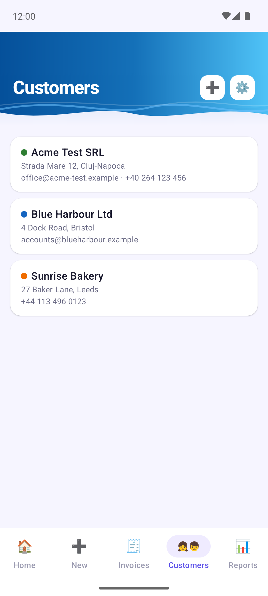
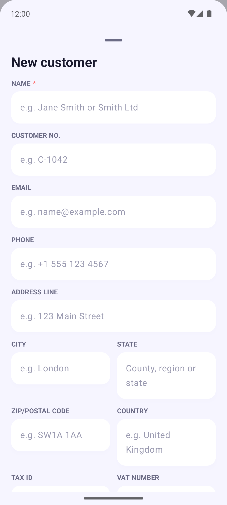
3 Vytvorenie faktúry
V Nová (alebo na dlaždici Nová faktúra): vyberte zákazníka (alebo ho rovno vytvorte) a nastavte dátum faktúry a splatnosť a potom pridajte položky.
Klepnite na Pridať údaje o položke a vyplňte popis, množstvo, cenu za jednotku a prípadne jednotku (napr. h, ks alebo kg) a dátum a čas. Jednotka sa v PDF tlačí vedľa množstva. Klepnutím na ceruzku (✏️) pri položke ju opravíte, kôš (🗑️) ju odstráni. Skôr použité popisy a ceny sa vám ponúkajú pri písaní.
Potom v prípade potreby pridajte sadzbu dane, Zľava (percento alebo pevnú sumu) a Poznámky. Číslo faktúry sa prideľuje samo (s Invoice Cove Pro ho možno upraviť) a menu vyberiete vedľa neho.
Náhľad vytvorí dočasné PDF, aby ste videli, ako vyzerá — zatiaľ sa nič neukladá. Tlačidlo Šablóna ukazuje, ktorá šablóna sa použije; klepnutím vyberiete inú len pre tento dokument.
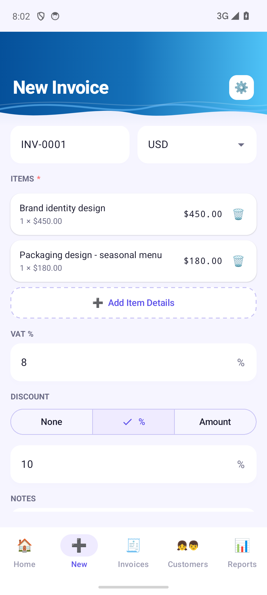
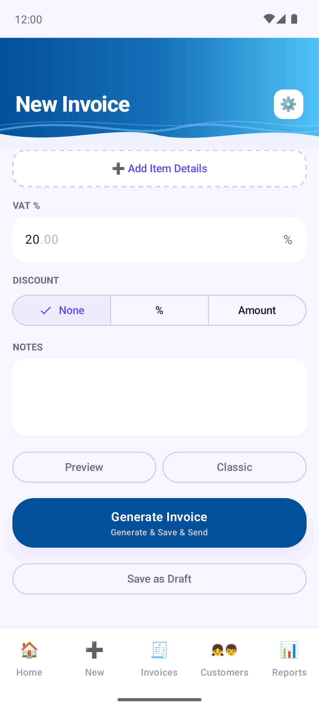
4 Koncepty
Faktúru, na ktorej ešte pracujete, nestratíte. Akonáhle vyberiete zákazníka a pridáte aspoň jednu položku alebo poznámku, Invoice Cove uchová koncept a aktualizuje ho chvíľu po tom, čo prestanete písať, a ešte raz, keď aplikáciu opustíte. Pri opustení obrazovky sa neobjaví otázka „zahodiť zmeny?“; krátka správa vám oznámi, že sa koncept uložil.
Klepnite na Uložiť ako koncept (pod Vytvoriť faktúru), aby ste faktúru zámerne odložili: uloží sa a formulár sa vyprázdni, pripravený na ďalšiu faktúru. Funguje to, akonáhle je vybraný zákazník, aj pred pridaním položiek.
Koncepty nájdete v Zákazníci → zákazník → Zobraziť históriu → Koncepty. Každý koncept ukazuje, kedy bol naposledy upravený, koľko má položiek a jeho celkovú sumu. Klepnutím v úpravách pokračujete alebo vystavíte faktúru; kôš ho zmaže.
- Koncept nikdy nespotrebuje číslo faktúry a nepočíta sa do bezplatného mesačného limitu. Číslo sa pridelí až pri vystavení konečnej faktúry — koncept ju potom nahradí.
- Koncept si pamätá dátum faktúry a splatnosť, iba ak ste ich zvolili sami; inak pri opätovnom otvorení použije dnešný dátum.
- Zmazanie zákazníka zmaže aj jeho koncepty (Invoice Cove sa vás najprv opýta). Koncepty sú súčasťou zálohy.
- Koncepty existujú pre faktúry; ponuky ich nemajú.
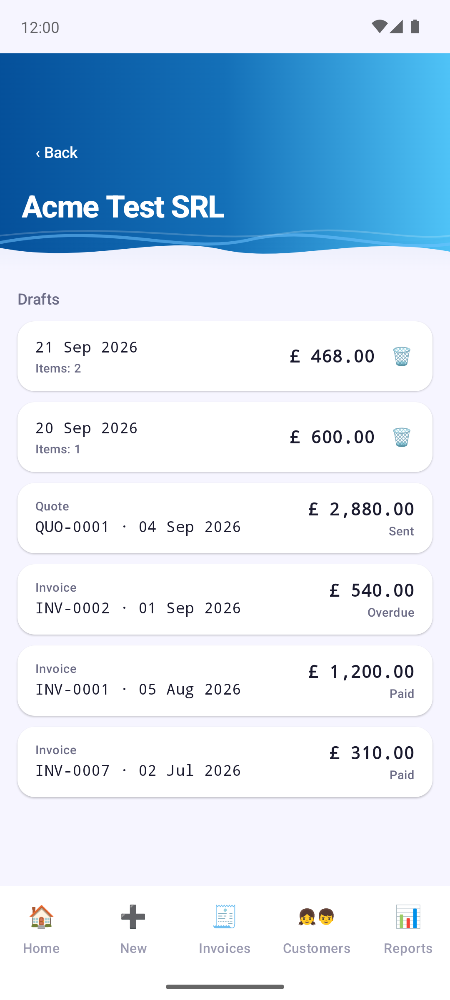
5 Správa faktúr
Karta Faktúry zoskupuje faktúry do priečinka pre každého zákazníka, ktoré môžete zoradiť podľa Naposledy fakturované, Abecedne alebo Počet faktúr. Otvorením priečinka uvidíte jeho faktúry zoradené podľa dátumu, hodnoty, čísla alebo stavu.
Každá faktúra má stav: Nezaplatená, Po splatnosti (po splatnosti), Čiastočne zaplatená (bola zaznamenaná záloha), Zaplatená alebo Zrušená. Klepnutím na faktúru ju zobrazíte (Zobraziť), znova odošlete (Zdieľať), označíte ako zaplatenú alebo stornovanú, prípadne zmažete.
- Označiť ako zaplatenú sa opýta na dátum platby a spôsob úhrady (prevod, hotovosť, karta, PayPal alebo iný). Zaplatenú faktúru už nemožno vrátiť späť na nezaplatenú.
- Zaznamenať zálohu zaznamená platbu vopred. Faktúra sa potom zobrazí ako Čiastočne zaplatená a záloha nesmie presiahnuť celkovú sumu.
- Označiť ako zrušenú ponechá faktúru v evidencii, ale označí ju ako zrušenú. Je to lepšie ako zmazanie, pretože zmazanú faktúru nemožno obnoviť.
S Pro možno priečinok zákazníka aj uložiť alebo zdieľať ako ZIP s PDF a celý zoznam exportovať pre vášho účtovníka — pozri Export faktúr.
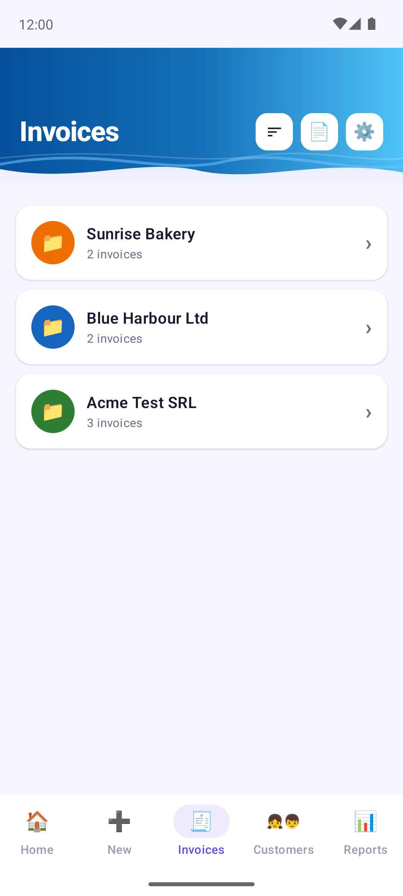
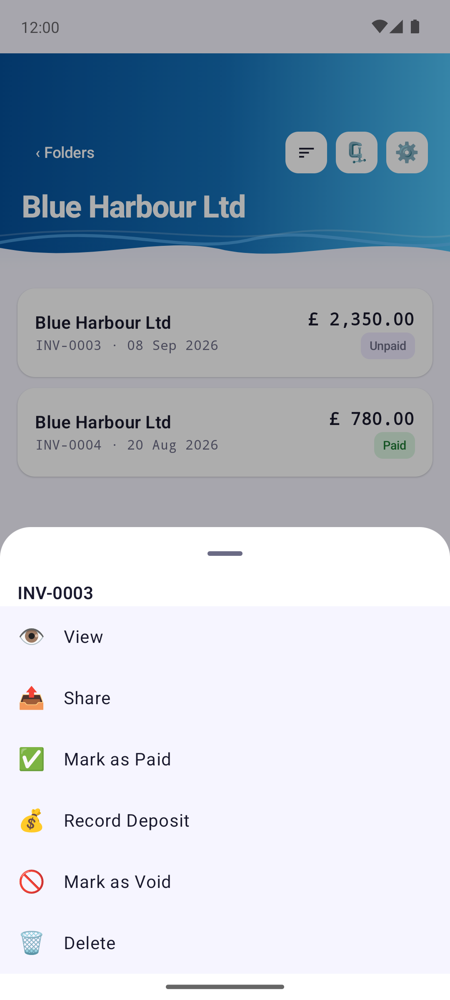
6 Export faktúr (Excel, CSV, ZIP)
K dispozícii s Invoice Cove Pro. Klepnite na ikonu exportu (📄) hore na karte Faktúry. Ktoré faktúry zahrnúť, vyberiete pomocou volieb roka a mesiaca (Všetky, jeden rok alebo jeden mesiac roka; ponúkajú sa len roky a mesiace, v ktorých faktúry sú), a potom vyberte, čo s nimi urobiť:
- Uložiť ako Excel / Zdieľať Excel — tabuľka v Exceli (.xlsx).
- Uložiť ako CSV / Zdieľať CSV — tá istá tabuľka ako súbor CSV.
- Uložiť faktúry ako ZIP / Zdieľať ZIP s faktúrami — PDF faktúr v jednom ZIPe, jeden priečinok na zákazníka.
- Odstrániť faktúry — natrvalo zmaže vybrané faktúry po dvoch potvrdeniach.
Uložiť vám nechá vybrať, kam v zariadení súbor pôjde; Zdieľať otvorí zdieľaciu ponuku Androidu, aby ste ho poslali e-mailom alebo v správe.
Excel a CSV sú vytvorené pre vášho účtovníka: predvolene jeden riadok na faktúru s číslom a dátumami, menom, číslom, daňovým číslom, IČ DPH, číslom obchodného registra a adresou zákazníka, medzisúčtom, zľavou, sadzbou DPH, sumou DPH a celkovou sumou faktúry, menou a stavom, dátumom a spôsobom platby. Hlavičky stĺpcov a pevné slová (faktúra, zaplatené, nezaplatené, spôsoby platby) sú v jazyku, na ktorý je aplikácia nastavená.
Ak chcete získať jeden riadok na každú položku faktúry, s údajmi o faktúre opakovanými na každom riadku a s pridaným popisom, množstvom, jednotkou, cenou a čistou sumou každej položky, zapnite Podrobný export (jeden riadok na položku).
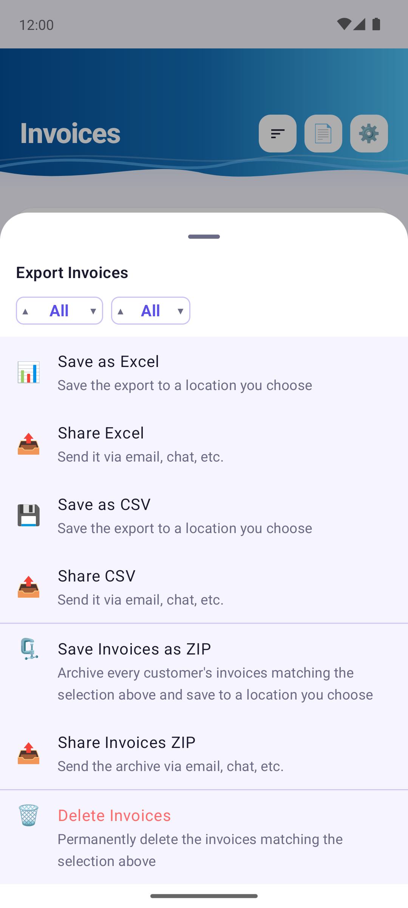
7 Vytvorenie ponuky
Dlaždica Nová ponuka funguje ako dlaždica Nová faktúra: rovnaké polia, rovnaké tlačidlá Náhľad a Šablóna, rovnaké Vytvoriť ponuku, ktoré jedným klepnutím uloží, vytvorí PDF a otvorí ponuku zdieľania, ale s Dátum ponuky a dátumom Platná do namiesto dátumu faktúry a splatnosti.
Ponuky nemajú koncepty.
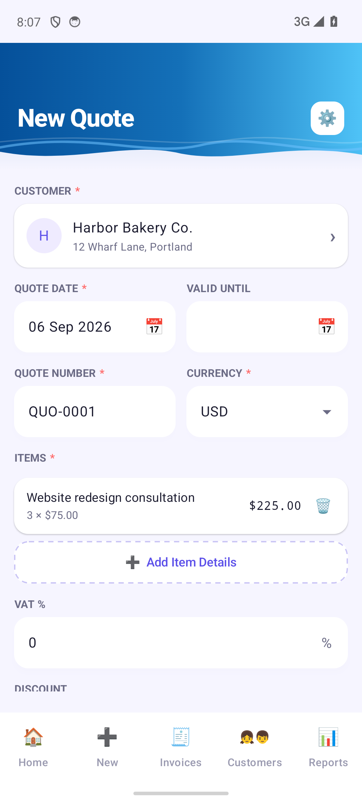
8 Správa ponúk a prevod na faktúru
Obrazovka Ponuky (z dlaždice na úvodnej obrazovke) uvádza ponuky podľa zákazníkov, rovnako ako faktúry. Otvorte ponuku, aby ste ju zobrazili alebo zdieľali, použite Prijať alebo Zamietnuť, keď zákazník odpovie, zaznamenajte zálohu alebo ju zmažte. Záloha nesmie presiahnuť celkovú sumu ponuky.
Keď zákazník ponuku prijme, použite Konvertovať na faktúru a zaškrtnuté položky sa prevedú na skutočnú faktúru, samostatne upraviteľnú. Splatnosť a zľavu možno ešte upraviť a pôvodná ponuka sa označí ako Konvertovaná a zostane vo vašej evidencii.
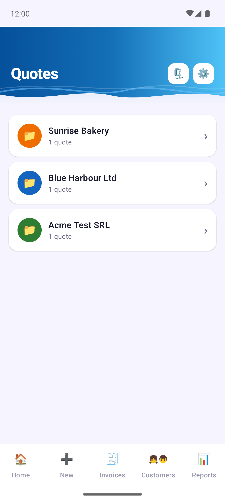
9 Kalendár a pripomienky
Obrazovka Kalendár je mesačný prehľad pre vaše vlastné poznámky. Klepnutím na deň poznámky zobrazíte alebo pridáte; poznámka má názov a text a s voľbou Pripomenúť mi a časom vám v nastavený dátum a čas pošle oznámenie. Prvý deň týždňa sa riadi vašimi nastaveniami.
Osobitne Invoice Cove posiela pripomienky platieb — miestne oznámenia o faktúrach, ktoré čoskoro budú splatné alebo už splatnosť prekročili. Nič sa neodosiela na server ani z neho neprijíma.
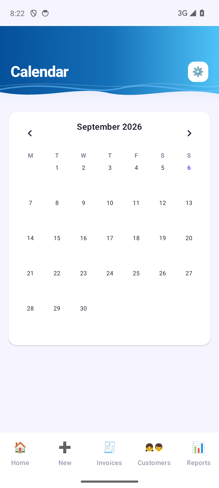
10 Prehľady
Prehľady vám dá rýchly prehľad: sumy Príjem (zaplatené), Neuhradené a Po splatnosti, počet faktúr, Príjem podľa mesiacov a vašich Najlepší zákazníci podľa fakturovanej sumy.
Klepnutím na kartu Neuhradené alebo Po splatnosti otvoríte zoznam presne týchto faktúr.
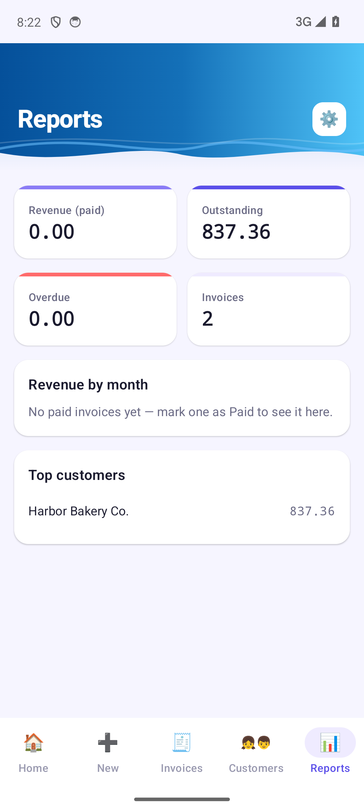
11 Údaje o firme a nastavenia
Nastavenia otvoríte ikonou ozubeného kolieska; táto obrazovka sa volá Údaje o firme. Začína vašimi voliteľnými predvoľbami: Vzhľad (Svetlý alebo Tmavý), predvolená Šablóna faktúry, Označenie dane (DPH, GST…), Prvý deň týždňa a Predvolená splatnosť, ktorá automaticky vyplní splatnosť (napr. Net 30). Pod nimi nasledujú Zabezpečenie (pozri Zámok aplikácie), Návrhy položiek a Záloha a obnovenie (pozri Záloha a obnovenie).
Pamäť popisov a cien si pamätá popisy a ceny položiek, aby ich ponúkala pri písaní; Vymazať ich zabudne, bez toho aby sa dotkla vašich faktúr.
Nižšie je profil vašej firmy, ktorý sa tlačí na každej faktúre a ponuke: Názov firmy, Vaše meno, krátke motto (Sídlo firmy), E-mail, Telefón, Formát dátumu dátumov, adresa, DIČ, IČ DPH, Registračné údaje (registračné číslo, základné imanie a podobne), Logo firmy a Platobné údaje (IBAN, odkaz PayPal.me). Každé pole má príklad a každé pole, ktoré necháte prázdne, sa na vašich faktúrach neobjaví. Keď skončíte, klepnite na Hotovo; ak odídete s neuloženými zmenami, budete požiadaní o potvrdenie.
Úplne dole sa zobrazujú táto Používateľská príručka a Zdieľať túto aplikáciu.
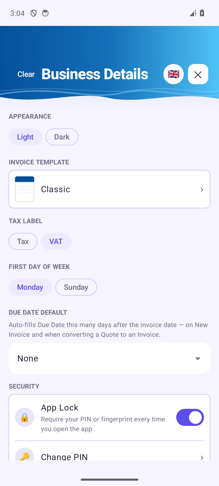
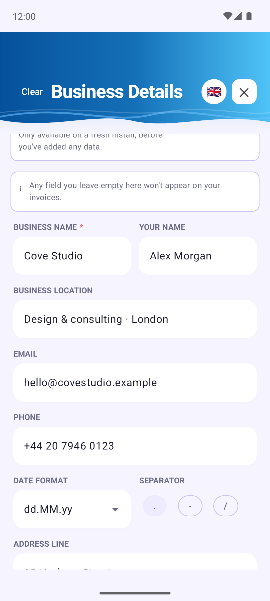
12 Záloha a obnovenie
K dispozícii s Invoice Cove Pro, v časti Záloha a obnovenie. Vytvoriť zálohu uloží všetko: faktúry, ponuky, koncepty, zákazníkov, kalendár, nastavenia, logo aj PDF, a to všetko do jedného súboru. Zvoľte Uložiť zálohu, aby ste ho uložili, kam chcete, alebo Zdieľať zálohu, aby ste ho poslali na bezpečné miesto.
Obnoviť zálohu vráti všetko späť, ak potrebujete údaje preniesť do nového telefónu. Funguje len na čerstvej inštalácii, kým ste nepridali žiadne údaje, takže nikdy nemôže prepísať to, čo už máte. Invoice Cove overí, že je súbor neporušený, a upozorní vás, ak je poškodený, nie je zálohou Invoice Cove alebo ho vytvorila novšia verzia aplikácie (najprv aktualizujte).
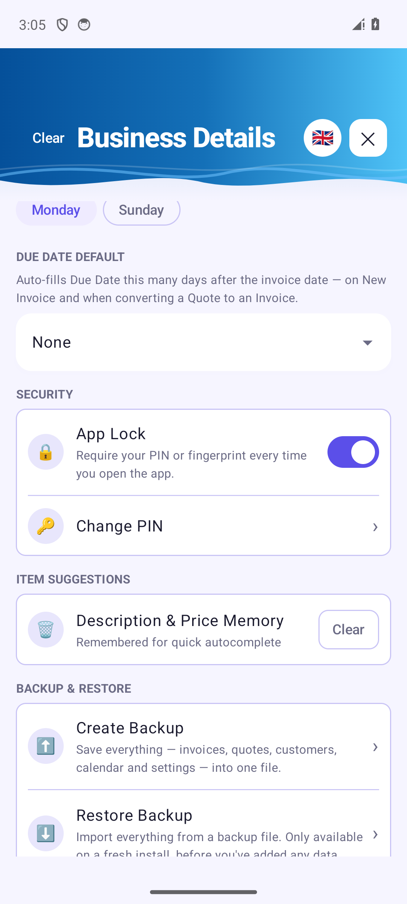
13 Zámok aplikácie
Zámok aplikácie je zapnutý od prvého spustenia: ešte pred čímkoľvek iným vás Invoice Cove požiada o vytvorenie PINu. Potom o PIN (alebo odtlačok prsta) požiada, keď sa aplikácia otvorí znova od začiatku alebo po reštarte telefónu, nie pri každom návrate do nej. Vypnúť ho môžete v časti Zabezpečenie.
- Nastaviť PIN: zvoľte štvormiestny PIN a potvrďte ho.
- Potom dostanete šesťmiestny obnovovací kód, ktorý sa zobrazí len raz. Zapíšte si ho a uložte na bezpečné miesto.
- Ak to váš telefón podporuje, odomykajte odtlačkom prsta (Použiť odtlačok prsta).
- Zabudli ste PIN? Použite Zabudli ste PIN? a zadajte obnovovací kód. Po 5 chybných pokusoch musíte počkať 30 sekúnd – čakanie sa s ďalšími chybnými pokusmi predlžuje.
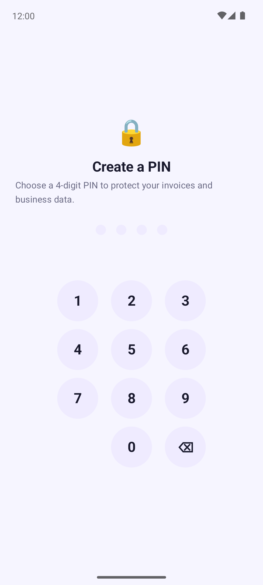
14 Jazyky
Invoice Cove hovorí 13 jazykmi: English, Română, Deutsch, Français, Español, Italiano, Português, Polski, Čeština, Slovenčina, Magyar, Nederlands a Svenska. Klepnite na okrúhlu ikonu s vlajkou hore v nastaveniach a jazyk sa zmení — aplikácia sa prepne okamžite.
Text vo vašich PDF a v exportoch do Excelu/CSV sa riadi jazykom, na ktorý je aplikácia nastavená, a táto príručka je dostupná v rovnakých 13 jazykoch (použite jazykovú lištu hore na stránke).
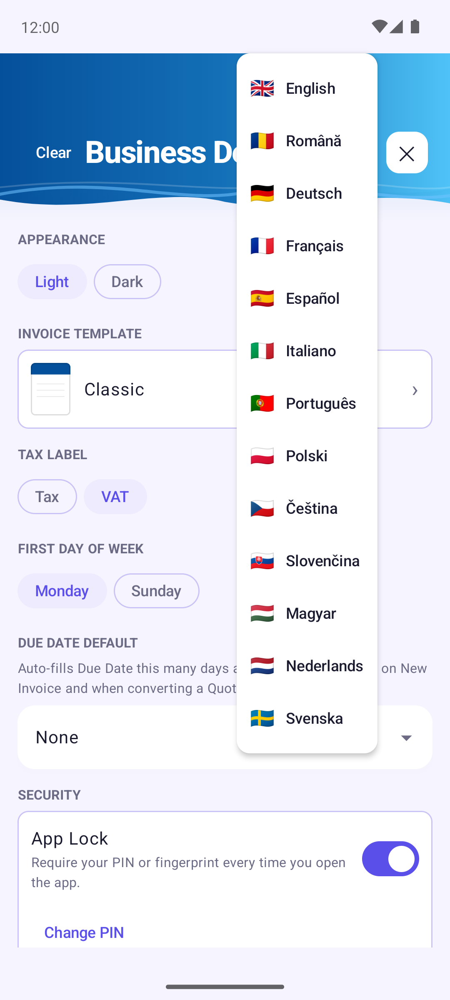
15 PDF šablóny
Invoice Cove zatiaľ ponúka 18 návrhov PDF: Classic, Client Color (vo farbe zákazníka), Minimal, Bold Corporate, Classic Clean, Modern Dark Accent, Organic Flow, Modern Professional Business, Minimalist Bakery Service, Gentle Flower, Cozy Paws, Soft Elegant, Solid Craft, Crimson Frame, Blush Botanical, Vintage Garage, Sparkle Waves a Spooky Hollow.
Predvolenú šablónu zvoľte v Nastaveniach → Šablóna faktúry: klepnite na návrh a potom na Hotovo. Platí pre všetko, čo od tej chvíle vytvoríte. Pre jednu faktúru alebo ponuku použite tlačidlo Šablóna vo formulári.
Každá šablóna tlačí rovnaké informácie: údaje o vašej firme, o zákazníkovi, položky s jednotkou a dátumom, súčty, poznámky a platobné údaje — ale len to, čo ste vyplnili. Dlhé faktúry pokračujú na druhej strane a súčet zostáva spolu s poslednou položkou.
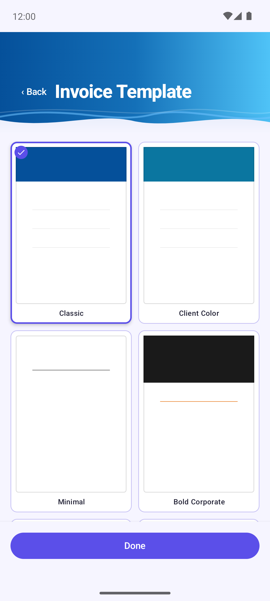
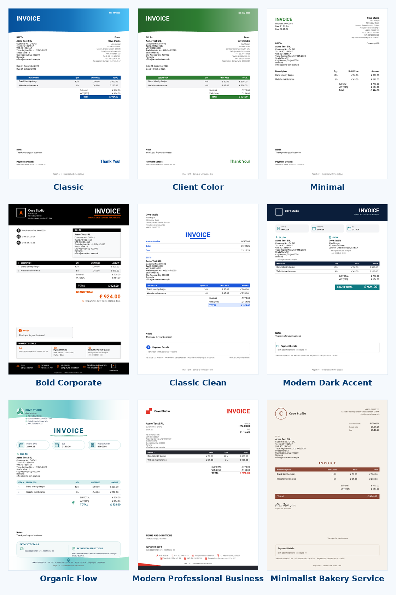
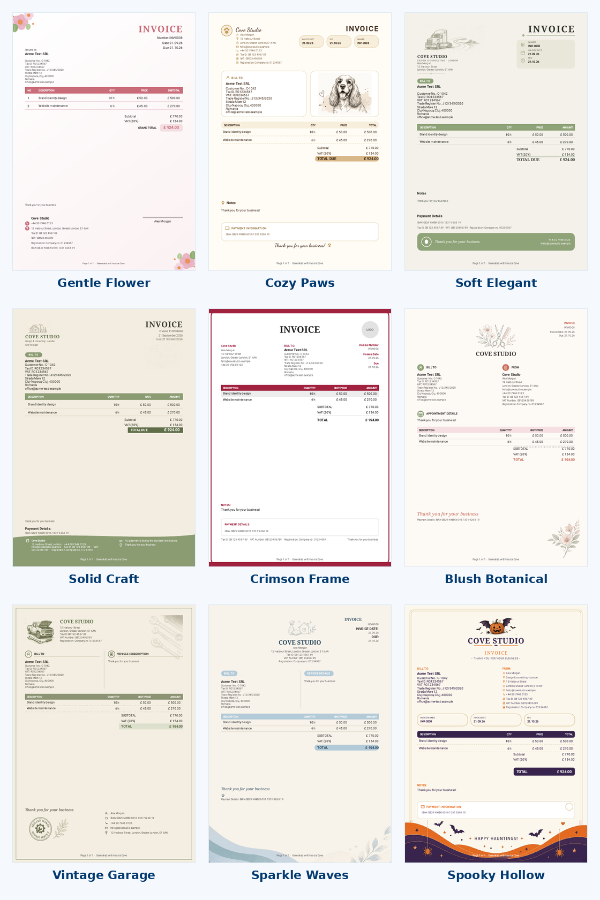
16 Bezplatný plán a Invoice Cove Pro
Invoice Cove je zadarmo, s niekoľkými rozumnými obmedzeniami:
- Až 3 faktúry vystavené za kalendárny mesiac
- Až 3 ponuky vystavené za kalendárny mesiac
- Až 3 zákazníci naraz
- Čísla faktúr a ponúk sa prideľujú automaticky a nemožno ich upraviť
- Export do Excelu, CSV a ZIP je len v Pro
- Záloha a obnovenie sú len v Pro
Invoice Cove Pro je jediný jednorazový nákup cez Google Play (nie predplatné), ktorý všetky tieto obmedzenia navždy odstráni. Koncepty, všetky šablóny a jazyky, zámok aplikácie aj vytváranie, náhľad a zdieľanie dokumentov sú zadarmo pre všetkých. Všetky podrobnosti nájdete v Podmienkach používania.